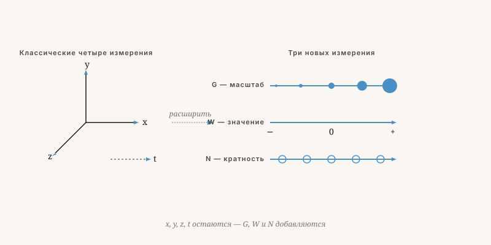

Трёх измерений недостаточно
Почему мы лучше понимаем мир, добавив три новых измерения: масштаб, ценность и множественность.
Якобус ван Мерксштейн · 10 мин чтения · 23 мая 2026

Небо с большим числом осей, чем мы привыкли видеть
От четырёх к семи измерениям
Нас воспитали с тремя пространственными измерениями и одним временным. Итого четыре. Чтобы взять чашку кофе — достаточно. Чтобы понять вселенную, термоядерный реактор или общество — нет.
В моей модели добавляются три измерения, которые мы обычно забываем или молча прячем в формулах.

| Измерение | Символ | Простыми словами |
|---|---|---|
| Пространство | x, y, z | Где находится предмет |
| Время | t | Когда существует предмет |
| Величина | G | На каком масштабе Вы смотрите — атом, человек, галактика |
| Ценность | W | От антиматерии до материи — насколько «весомо» существование |
| Множественность | N | Сколько параллельных версий системы существует |
Масштаб, ценность и множественность
Та же концепция работает для обществ
Закон масштаба в политике
Политика, работающая на муниципальном уровне, может дать обратный эффект на уровне страны. Это не случайность — это закон масштаба. Та же физика, что у муравья и слона.
Ценности, не отражённые в балансе
Уважение, достоинство и доверие имеют собственное значение W, которое учитывается, даже если оно не отражено в таблице. Кто считает только деньги, упускает целое измерение.
Множественность как поле для экспериментов
Одна страна — один эксперимент. Двадцать стран, каждая с собственным выбором, дают доказательства. Унифицирующее регулирование тогда хуже конкуренции между государствами — значение N уничтожено.
Концепция, а не доказанная теория
Честный ответ: это концепция, а не доказанная теория. Я её разработал, потому что существующие модели требуют слишком много заплаток: тёмная материя, тёмная энергия, тонкая настройка констант.
Хорошая модель объясняет многое немногим. Моя модель пытается это сделать, добавив три недостающих оси. Верна ли она — я знаю неточно.
«Новая научная истина торжествует не потому, что её противников удаётся убедить и они переходят в новую веру, а потому, что её противники постепенно вымирают, а подрастающее поколение усваивает истину с самого начала.»
— Макс Планк
Трёх измерений недостаточно
Вселенную, термоядерный реактор и общество можно понять лишь добавив три недостающие оси: масштаб, ценность и множественность.
Нас воспитали на трёх пространственных измерениях и одном временном. Для того чтобы взять чашку кофе, этого достаточно. Для понимания Вселенной — нет. В модели семи измерений добавляются ещё три: G (величина или масштаб), W (ценность — спектр от антиматерии до материи) и N (множество параллельных систем).
G объясняет, почему муравей падает с небоскрёба без вреда для себя, а слон — нет: тот же закон, иной результат на ином масштабе. W объясняет, почему мы не можем видеть то, что называем «тёмной материей»: это обычная материя с иным W-значением, подобно тому как передатчик на 100 МГц невидим для приёмника, настроенного на 90 МГц. N признаёт, что чёрная дыра изнутри, возможно, является входом в иную систему.
Та же концепция применима к обществу. Политика, работающая на муниципальном уровне, может дать обратный эффект на уровне государства — это закон масштаба G. Тот, кто считает только деньги, упускает W-ценность доверия и уважения. А двадцать стран, каждая из которых делает свой выбор, дают больше доказательств, чем одна унифицированная система, — это N как экспериментальное поле.
Концепция, а не доказанная теория
Честный ответ: это концептуальная рамка, а не доказанная теория. Она была разработана потому, что существующие модели требуют слишком много специальных поправок. Как говорил Макс Планк: «Новая научная истина торжествует не потому, что убеждает своих противников, а потому, что противники постепенно вымирают, а подрастающее поколение сразу знакомится с ней.»